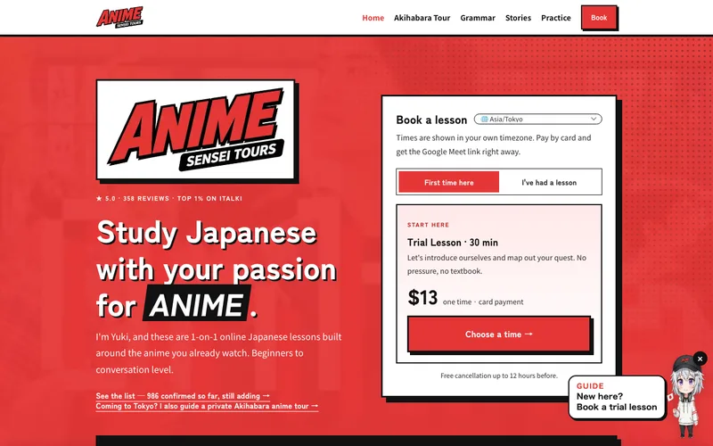
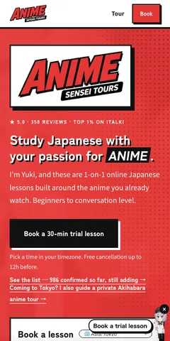
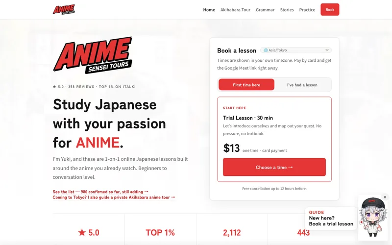
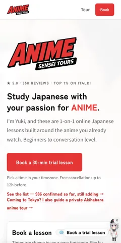
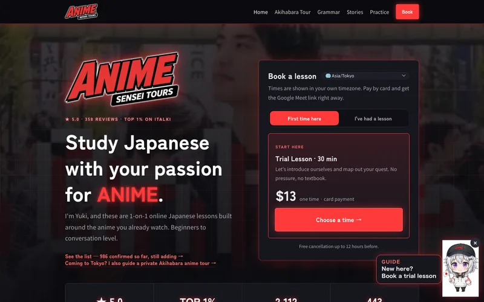
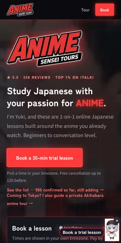
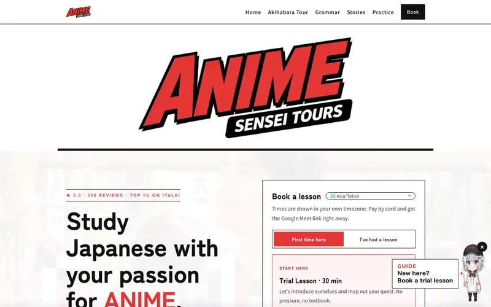
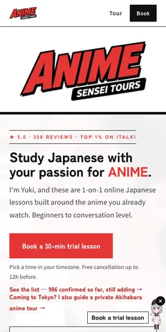
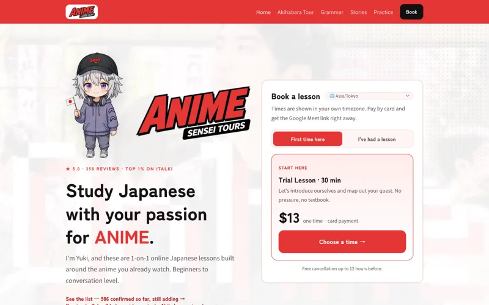
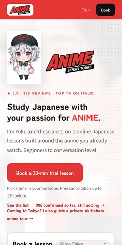

v1赤×黒の漫画タイトル全開
この案を開く →
赤地に網点、黒帯の見出し、太枠と影のコマ割りで、ロゴの漫画タイトル感をページ全体に広げた案。
ナビゲーター：あり 右下にSD版ナビゲーター（白い吹き出し＋黒の太枠と影、コマ割りに合わせた形）。


v2白ベース＋赤差しのクリーン系
この案を開く →
白と余白が主役。赤はボタンと数字と見出しの短い線だけに絞り、信頼感と読みやすさを優先した案。
ナビゲーター：あり 右下にSD版ナビゲーター（細い罫線の白い吹き出し、影は薄く）。


v3黒ベース＋アキバのネオン感
この案を開く →
黒地に赤の発光。ロゴ・数字・ボタンをネオンのように光らせ、夜の秋葉原の空気に寄せた案。
ナビゲーター：あり 右下にSD版ナビゲーター（黒い吹き出しを赤く発光させた形）。


v4雑誌・編集系の誌面レイアウト
この案を開く →
巨大ロゴの題字、CHAPTER番号と罫線の章立て。レビューは吹き出しをやめて誌面の引用として読ませる案。
ナビゲーター：あり 右下にSD版ナビゲーター（角丸なしの罫線囲み、誌面の囲み記事の形）。


v5マスコット主役
この案を開く →
ヒーローにマスコットとロゴを並べ、各見出しにマスコットの顔、説明文はマスコットの吹き出しにした案。
ナビゲーター：あり 右下にSD版ナビゲーター（赤枠の吹き出し）。ヒーローのキャラが見えている間は引っ込む。